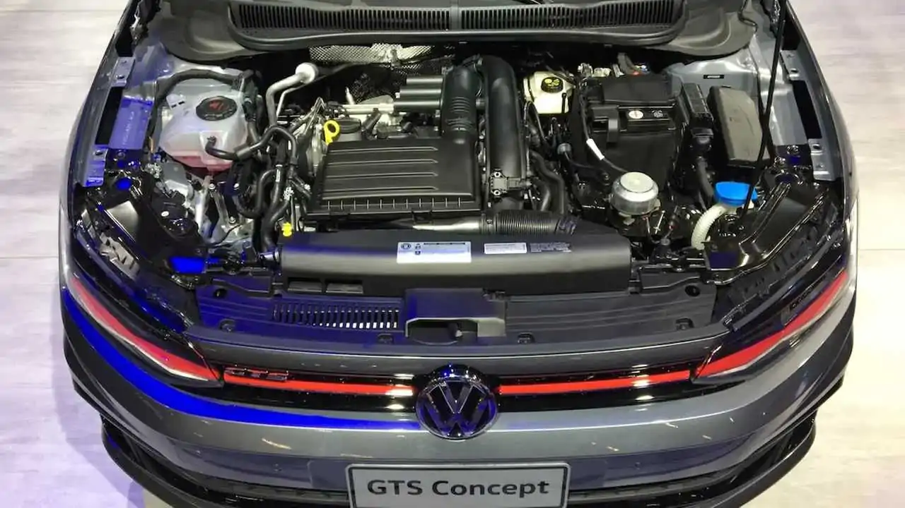

Motor
Motor 1.4 Turbo Volkswagen Polo GTS
El Volkswagen Polo GTS está equipado con un motor turbocharged de 1.4 litros TSI que ofrece una potencia máxima de 150 caballos de fuerza y un par máximo de 250 Nm. Combinado con una transmisión automática DSG de 6 velocidades, este motor proporciona un rendimiento excepcional, acelerando de 0 a 100 km/h en solo 7.9 segundos.
Características técnicas:
- Motor: 1.4L TSI de 4 cilindros.
- Potencia: 150 hp a 5000-6000 rpm.
- Par máximo: 250 Nm a 1500-3500 rpm.
- Transmisión: Automática DSG de 6 velocidades.
- Aceleración (0-100 km/h): 7.9 segundos.
- Velocidad máxima: 220 km/h.
- Consumo de combustible: 6.1 L/100 km (combinado).
Además, cuenta con tecnología avanzada como el sistema Start-Stop inyección directa TSI y un turbocharger para maximizar la eficiencia y el rendimiento. El modo deportivo y el control de estabilidad (ESC) garantizan una experiencia de conducción emocionante y segura.
